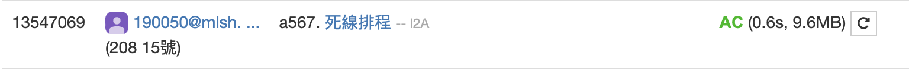

如果可完成的作業是一個list，會發現每個元素的deadline一定大於索引(也可以說是deadline大於等於到deadline時的子區間長度)，而照常理來說，deadline一定是由小到大，而profit不能確定，所以一開始先依deadline大小排序data，再新增一個heapq(在Python標準函示庫，正式名稱是優先佇列)，而如果要放入作業的deadline大於該heapq的長度，則直接把該作業的profit放入此heapq;而如果等於heapq的長度，代表如果要寫這個作業必須犧牲掉其中一個作業，這時候如果heapq裡的最小profit小於該作業的profit，則做抽換，以達最大利益。
